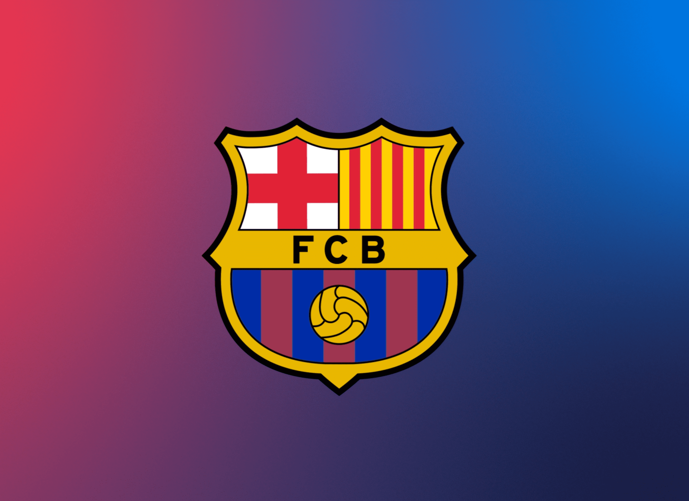
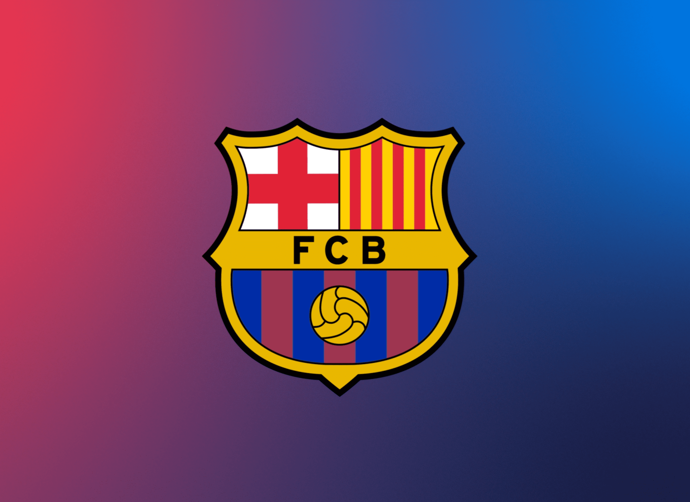

Historia del FC Barcelona
El FC Barcelona, también conocido como "Barça", es un club de fútbol con sede en Barcelona, España. Fundado en 1899, ha sido un símbolo de la ciudad y una fuerza dominante en el fútbol europeo durante décadas...
El FC Barcelona, también conocido como "Barça", es un club de fútbol con sede en Barcelona, España. Fundado en 1899, ha sido un símbolo de la ciudad y una fuerza dominante en el fútbol europeo durante décadas...
